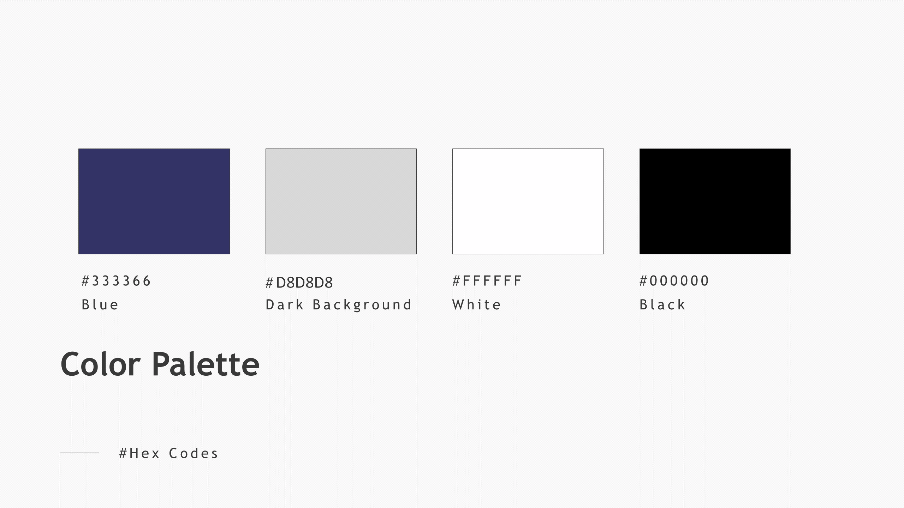
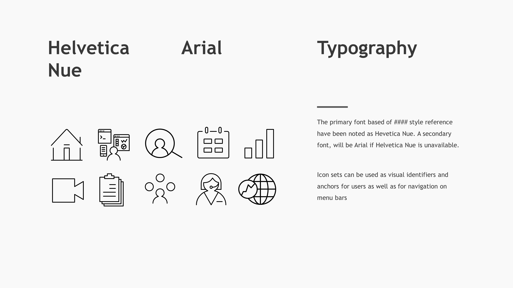
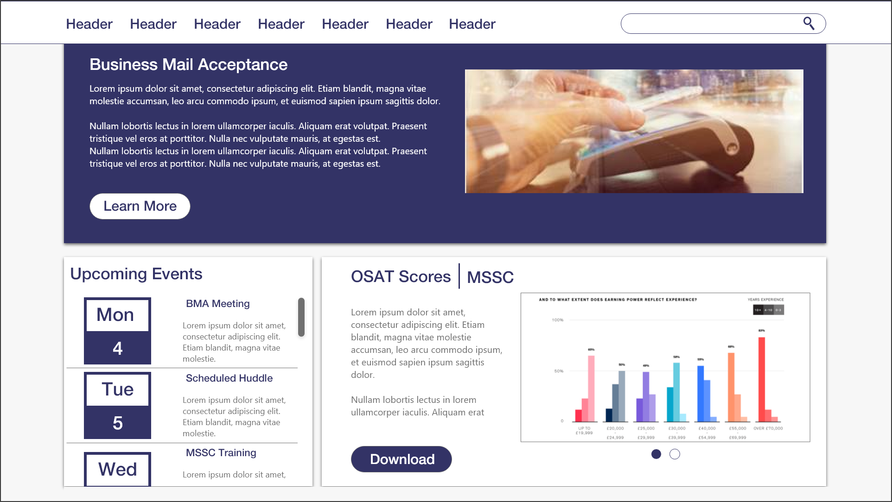
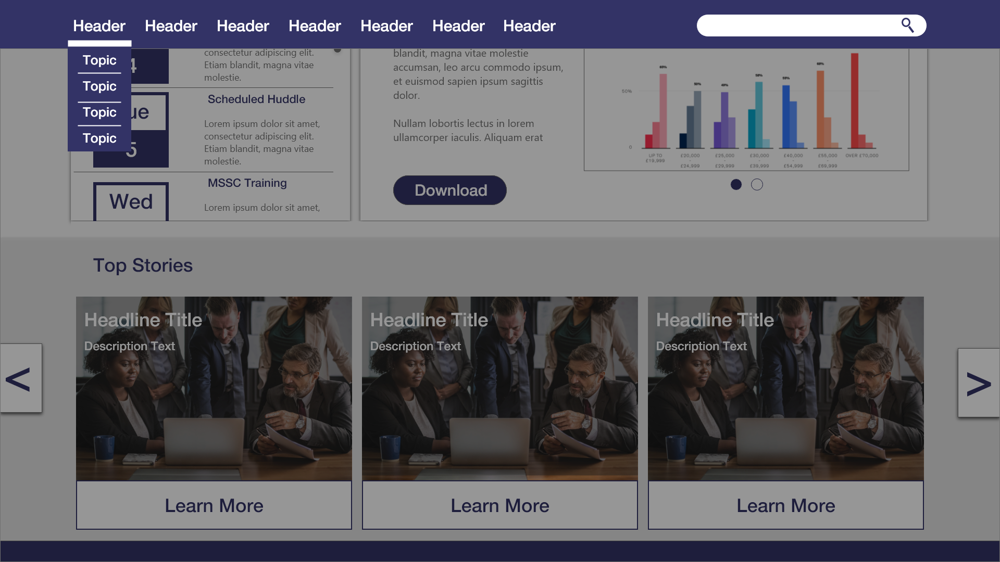

About Project
As a consultant at IBM, one of my projects involved re-designing an internal facing website for government employees.
The re-design was in hope to help government employees find the document they were looking for easily. There have been complaints from the field that the website was hard to use and felt “clunky.”
Research
Using Google analytics, I was able to find bounce rates, page duration, and num. of sessions per page.This helped identify what pages weren’t in much use and what pages were important for end-users. I also had the opportunity to interview a few people from the field and identify what documents were important to them.
With the information found from interviews and analytics, I started working on the website.
Approach
From the research and requirements gathering from the client these were the objectives:Unify brand identity and communications under one style guide
Organize the site in a way to increase usage
To introduce a new design for users to navigate easily and efficiently
The number 1 Job to be Done (JTBD) for the re-design is to make sure that the users can find the documents they need to find
Initial Design
Note: For security purposes I will not be showing the current website and change language from the mock-ups.
Unify brand identity and communications under one style guide: To Unify the brand, a style guide was created based on the colors from the organization.

color pallete for website

typography and icons
Putting important documents to the front will likely reduce number of clicks and help users find what they need immediately. From interviews, I found that many of the users don’t have a lot of time on their computer to go through the website and on average have less than 5 minutes per session to find what they need.

Home page
The new hierarchy for the header would be department to document type

Drop-Down feature